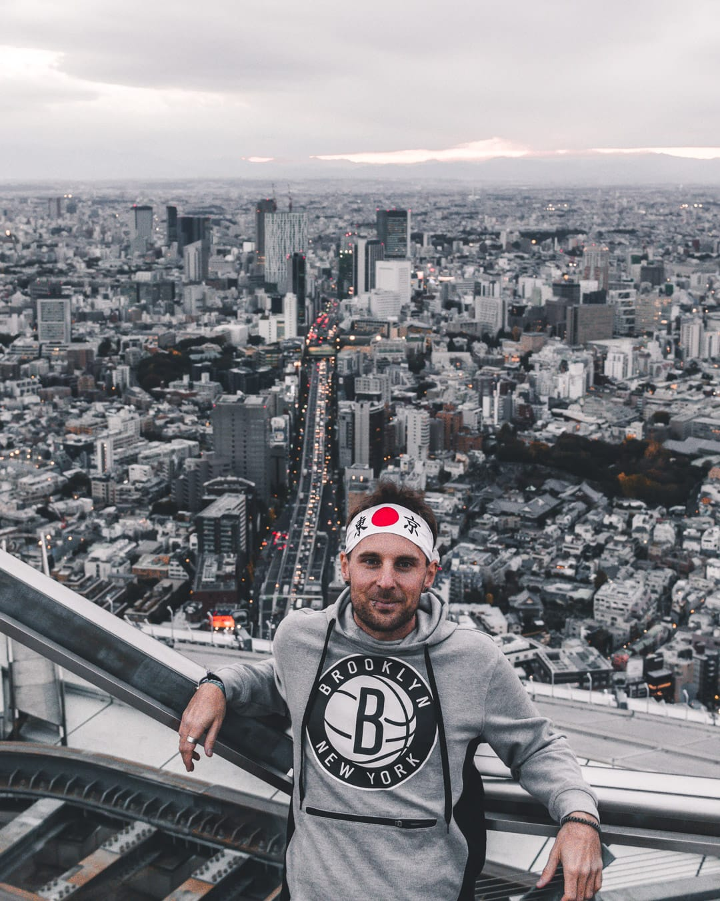

Designed for an effortnessly easy going one-click edit on Adobe Lightroom CC
V1-Main
Designed for an orange and teal style a versatile use
V2-Urban
Designed for a desaturated Street Style look

V3-Cinematic
Designed for a clean edit style
V4-Moddy
Designed for a high contrastmoody look

V5-2049
My speical preset featuring for a futuristic look